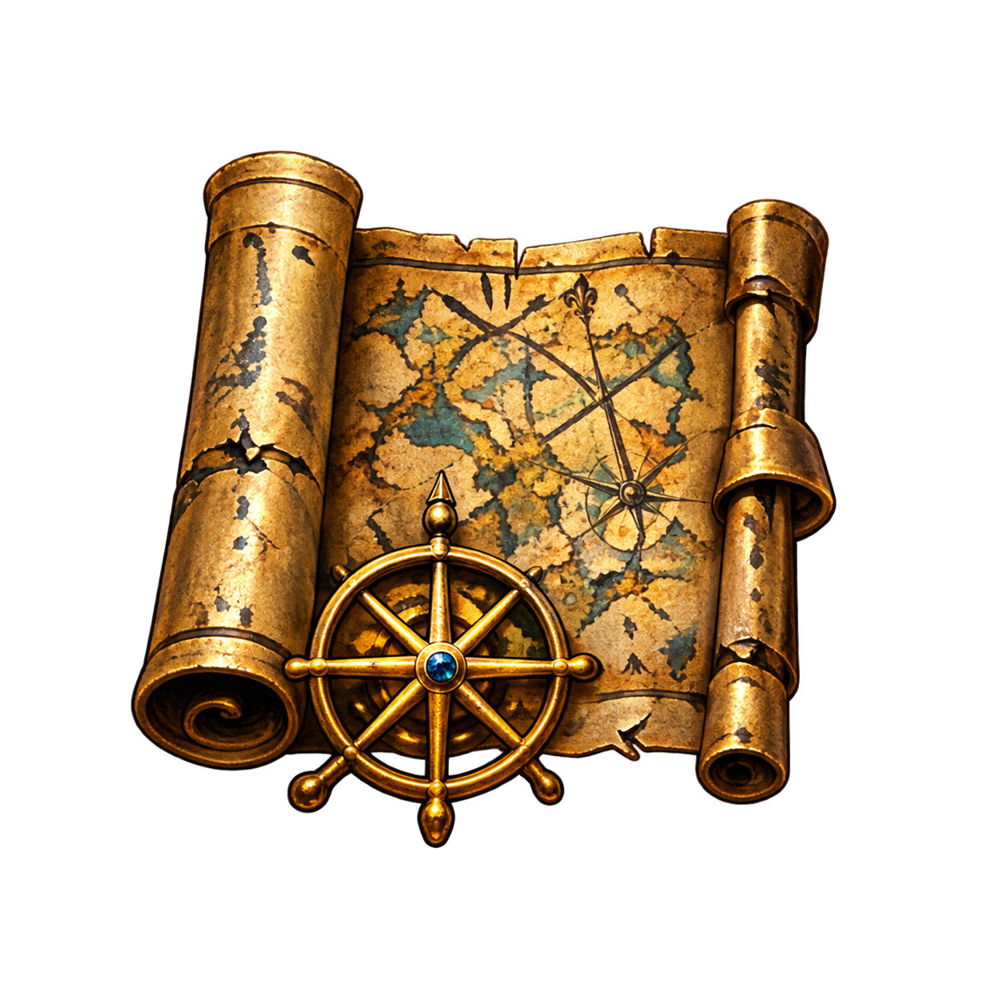
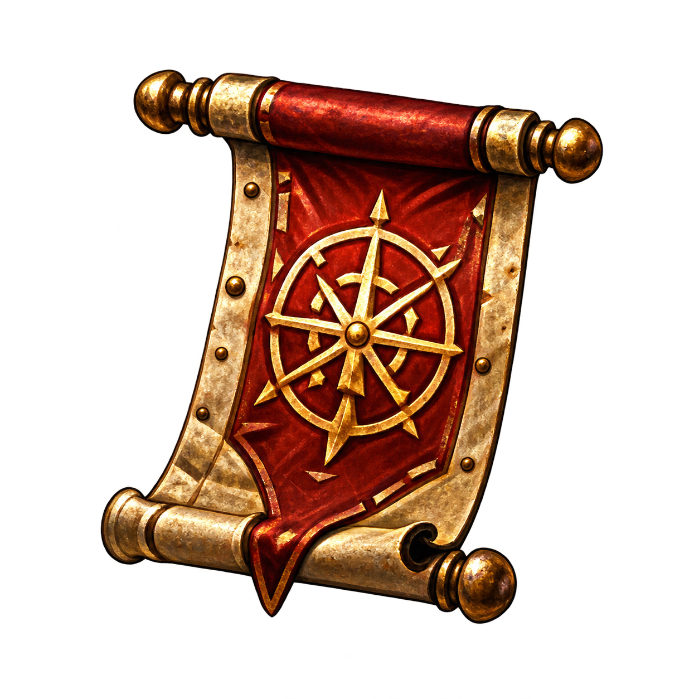
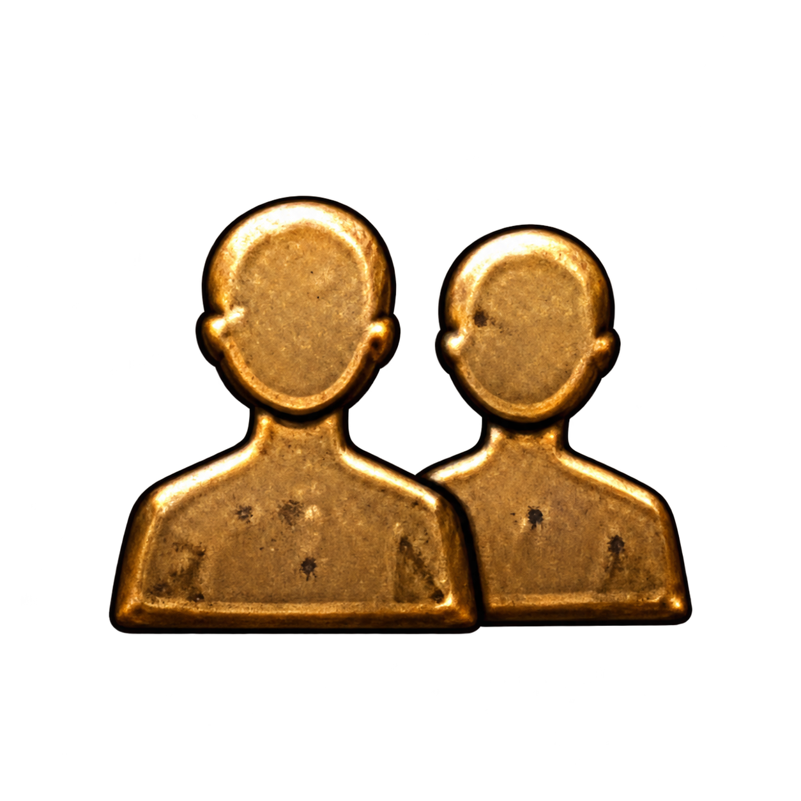
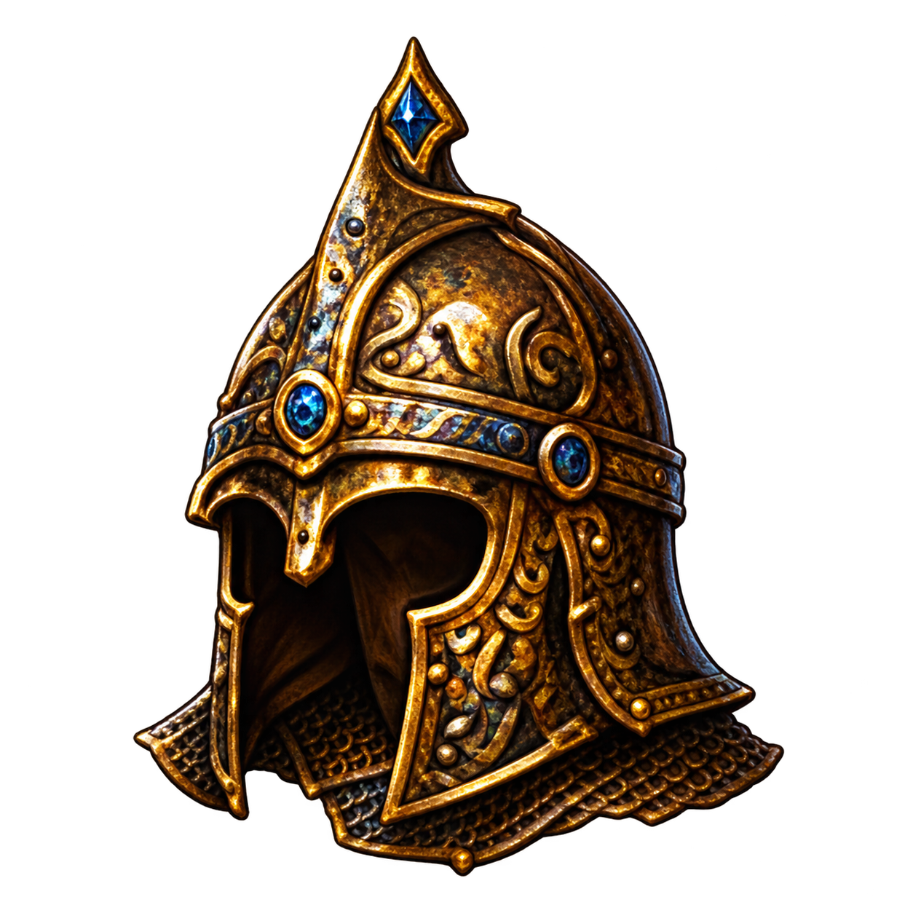

Map

Imagegen-assisted extractions/reconstructions from approved icons. These are adapted sprites, not pixel-identical source cuts. World Map metal frames are unchanged. Original generated alpha is preserved.




The Unity composition applies a 0.76 RGB multiplier to the symbols to suit the darker approved metalwork.